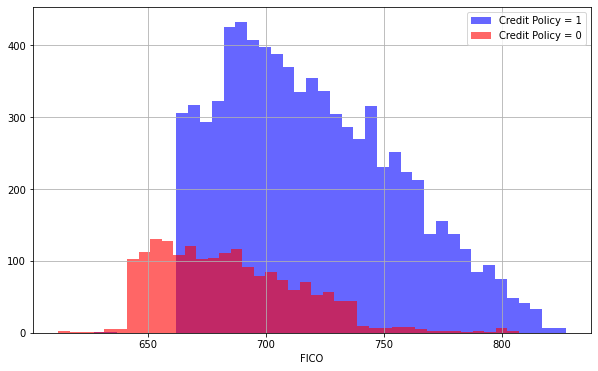
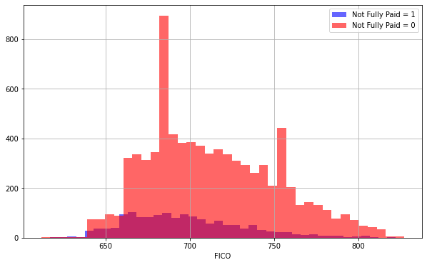
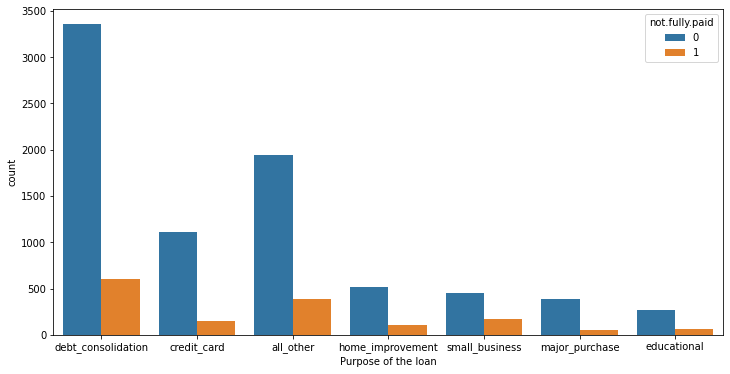
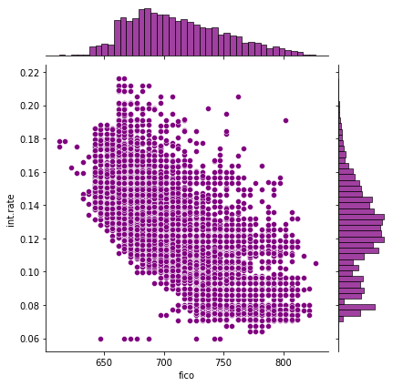
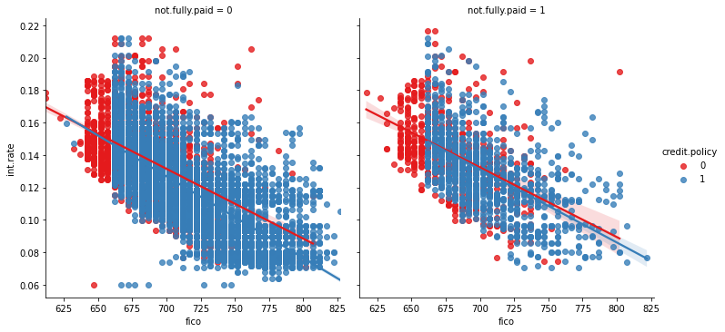

Random Forest Project
For this project we will be exploring publicly available data from LendingClub.com. Lending Club connects people who need money (borrowers) with people who have money (investors). Hopefully, as an investor you would want to invest in people who showed a profile of having a high probability of paying you back. We will try to create a model that will help predict this.
Lending club had a very interesting year in 2016, so let's check out some of their data and keep the context in mind. This data is from before they even went public.
We will use lending data from 2007-2010 and be trying to classify and predict whether or not the borrower paid back their loan in full. You can download the data from here or just use the csv already provided. It's recommended you use the csv provided as it has been cleaned of NA values.
Here are what the columns represent:
- credit.policy: 1 if the customer meets the credit underwriting criteria of LendingClub.com, and 0 otherwise.
- purpose: The purpose of the loan (takes values "creditcard", "debtconsolidation", "educational", "majorpurchase", "smallbusiness", and "all_other").
- int.rate: The interest rate of the loan, as a proportion (a rate of 11% would be stored as 0.11). Borrowers judged by LendingClub.com to be more risky are assigned higher interest rates.
- installment: The monthly installments owed by the borrower if the loan is funded.
- log.annual.inc: The natural log of the self-reported annual income of the borrower.
- dti: The debt-to-income ratio of the borrower (amount of debt divided by annual income).
- fico: The FICO credit score of the borrower.
- days.with.cr.line: The number of days the borrower has had a credit line.
- revol.bal: The borrower's revolving balance (amount unpaid at the end of the credit card billing cycle).
- revol.util: The borrower's revolving line utilization rate (the amount of the credit line used relative to total credit available).
- inq.last.6mths: The borrower's number of inquiries by creditors in the last 6 months.
- delinq.2yrs: The number of times the borrower had been 30+ days past due on a payment in the past 2 years.
- pub.rec: The borrower's number of derogatory public records (bankruptcy filings, tax liens, or judgments).
Import Libraries
Import the usual libraries for pandas and plotting. You can import sklearn later on.
import pandas as pd
import numpy as np
import seaborn as sns
import matplotlib.pyplot as plt
%matplotlib inline
Get the Data
** Use pandas to read loan_data.csv as a dataframe called loans.**
loans = pd.read_csv('loan_data.csv')
** Check out the info(), head(), and describe() methods on loans.**
loans.info()
<class 'pandas.core.frame.DataFrame'>
RangeIndex: 9578 entries, 0 to 9577
Data columns (total 14 columns):
# Column Non-Null Count Dtype
--- ------ -------------- -----
0 credit.policy 9578 non-null int64
1 purpose 9578 non-null object
2 int.rate 9578 non-null float64
3 installment 9578 non-null float64
4 log.annual.inc 9578 non-null float64
5 dti 9578 non-null float64
6 fico 9578 non-null int64
7 days.with.cr.line 9578 non-null float64
8 revol.bal 9578 non-null int64
9 revol.util 9578 non-null float64
10 inq.last.6mths 9578 non-null int64
11 delinq.2yrs 9578 non-null int64
12 pub.rec 9578 non-null int64
13 not.fully.paid 9578 non-null int64
dtypes: float64(6), int64(7), object(1)
memory usage: 1.0+ MB
loans.head()
| credit.policy | purpose | int.rate | installment | log.annual.inc | dti | fico | days.with.cr.line | revol.bal | revol.util | inq.last.6mths | delinq.2yrs | pub.rec | not.fully.paid | |
|---|---|---|---|---|---|---|---|---|---|---|---|---|---|---|
| 0 | 1 | debt_consolidation | 0.1189 | 829.10 | 11.350407 | 19.48 | 737 | 5639.958333 | 28854 | 52.1 | 0 | 0 | 0 | 0 |
| 1 | 1 | credit_card | 0.1071 | 228.22 | 11.082143 | 14.29 | 707 | 2760.000000 | 33623 | 76.7 | 0 | 0 | 0 | 0 |
| 2 | 1 | debt_consolidation | 0.1357 | 366.86 | 10.373491 | 11.63 | 682 | 4710.000000 | 3511 | 25.6 | 1 | 0 | 0 | 0 |
| 3 | 1 | debt_consolidation | 0.1008 | 162.34 | 11.350407 | 8.10 | 712 | 2699.958333 | 33667 | 73.2 | 1 | 0 | 0 | 0 |
| 4 | 1 | credit_card | 0.1426 | 102.92 | 11.299732 | 14.97 | 667 | 4066.000000 | 4740 | 39.5 | 0 | 1 | 0 | 0 |
loans.describe()
| credit.policy | int.rate | installment | log.annual.inc | dti | fico | days.with.cr.line | revol.bal | revol.util | inq.last.6mths | delinq.2yrs | pub.rec | not.fully.paid | |
|---|---|---|---|---|---|---|---|---|---|---|---|---|---|
| count | 9578.000000 | 9578.000000 | 9578.000000 | 9578.000000 | 9578.000000 | 9578.000000 | 9578.000000 | 9.578000e+03 | 9578.000000 | 9578.000000 | 9578.000000 | 9578.000000 | 9578.000000 |
| mean | 0.804970 | 0.122640 | 319.089413 | 10.932117 | 12.606679 | 710.846314 | 4560.767197 | 1.691396e+04 | 46.799236 | 1.577469 | 0.163708 | 0.062122 | 0.160054 |
| std | 0.396245 | 0.026847 | 207.071301 | 0.614813 | 6.883970 | 37.970537 | 2496.930377 | 3.375619e+04 | 29.014417 | 2.200245 | 0.546215 | 0.262126 | 0.366676 |
| min | 0.000000 | 0.060000 | 15.670000 | 7.547502 | 0.000000 | 612.000000 | 178.958333 | 0.000000e+00 | 0.000000 | 0.000000 | 0.000000 | 0.000000 | 0.000000 |
| 25% | 1.000000 | 0.103900 | 163.770000 | 10.558414 | 7.212500 | 682.000000 | 2820.000000 | 3.187000e+03 | 22.600000 | 0.000000 | 0.000000 | 0.000000 | 0.000000 |
| 50% | 1.000000 | 0.122100 | 268.950000 | 10.928884 | 12.665000 | 707.000000 | 4139.958333 | 8.596000e+03 | 46.300000 | 1.000000 | 0.000000 | 0.000000 | 0.000000 |
| 75% | 1.000000 | 0.140700 | 432.762500 | 11.291293 | 17.950000 | 737.000000 | 5730.000000 | 1.824950e+04 | 70.900000 | 2.000000 | 0.000000 | 0.000000 | 0.000000 |
| max | 1.000000 | 0.216400 | 940.140000 | 14.528354 | 29.960000 | 827.000000 | 17639.958330 | 1.207359e+06 | 119.000000 | 33.000000 | 13.000000 | 5.000000 | 1.000000 |
Exploratory Data Analysis
Let's do some data visualization! We'll use seaborn and pandas built-in plotting capabilities, but feel free to use whatever library you want. Don't worry about the colors matching, just worry about getting the main idea of the plot.
** Create a histogram of two FICO distributions on top of each other, one for each credit.policy outcome.**
Note: This is pretty tricky, feel free to reference the solutions. You'll probably need one line of code for each histogram, I also recommend just using pandas built in .hist()
plt.figure(figsize=(10,6))
loans[loans['credit.policy']==1]['fico'].hist(bins=40, color='blue', label='Credit Policy = 1', alpha=0.6)
loans[loans['credit.policy']==0]['fico'].hist(bins=40, color='red', label='Credit Policy = 0', alpha=0.6)
plt.legend()
plt.xlabel('FICO')
Text(0.5, 0, 'FICO')

** Create a similar figure, except this time select by the not.fully.paid column.**
plt.figure(figsize=(10,6))
loans[loans['not.fully.paid']==1]['fico'].hist(bins=40, color='blue', label='Not Fully Paid = 1', alpha=0.6)
loans[loans['not.fully.paid']==0]['fico'].hist(bins=40, color='red', label='Not Fully Paid = 0', alpha=0.6)
plt.legend()
plt.xlabel('FICO')
Text(0.5, 0, 'FICO')

** Create a countplot using seaborn showing the counts of loans by purpose, with the color hue defined by not.fully.paid. **
plt.figure(figsize=(12,6))
sns.countplot(x='purpose', hue='not.fully.paid', data=loans)
plt.xlabel('Purpose of the loan')
Text(0.5, 0, 'Purpose of the loan')

** Let's see the trend between FICO score and interest rate. Recreate the following jointplot.**
sns.jointplot(x='fico', y='int.rate', data=loans, color='purple')
<seaborn.axisgrid.JointGrid at 0x7f3e23ae7090>

** Create the following lmplots to see if the trend differed between not.fully.paid and credit.policy. Check the documentation for lmplot() if you can't figure out how to separate it into columns.**
sns.lmplot(x='fico', y='int.rate', data=loans, hue='credit.policy', col='not.fully.paid', palette='Set1')
<seaborn.axisgrid.FacetGrid at 0x7f3e238b9a10>

Setting up the Data
Let's get ready to set up our data for our Random Forest Classification Model!
Check loans.info() again.
loans.info()
<class 'pandas.core.frame.DataFrame'>
RangeIndex: 9578 entries, 0 to 9577
Data columns (total 14 columns):
# Column Non-Null Count Dtype
--- ------ -------------- -----
0 credit.policy 9578 non-null int64
1 purpose 9578 non-null object
2 int.rate 9578 non-null float64
3 installment 9578 non-null float64
4 log.annual.inc 9578 non-null float64
5 dti 9578 non-null float64
6 fico 9578 non-null int64
7 days.with.cr.line 9578 non-null float64
8 revol.bal 9578 non-null int64
9 revol.util 9578 non-null float64
10 inq.last.6mths 9578 non-null int64
11 delinq.2yrs 9578 non-null int64
12 pub.rec 9578 non-null int64
13 not.fully.paid 9578 non-null int64
dtypes: float64(6), int64(7), object(1)
memory usage: 1.0+ MB
Categorical Features
Notice that the purpose column as categorical
That means we need to transform them using dummy variables so sklearn will be able to understand them. Let's do this in one clean step using pd.get_dummies.
Let's show you a way of dealing with these columns that can be expanded to multiple categorical features if necessary.
Create a list of 1 element containing the string 'purpose'. Call this list cat_feats.
cat_feats = ['purpose']
Now use pd.getdummies(loans,columns=catfeats,dropfirst=True) to create a fixed larger dataframe that has new feature columns with dummy variables. Set this dataframe as finaldata.
final_data = pd.get_dummies(loans, columns=cat_feats, drop_first=True)
final_data.info()
<class 'pandas.core.frame.DataFrame'>
RangeIndex: 9578 entries, 0 to 9577
Data columns (total 19 columns):
# Column Non-Null Count Dtype
--- ------ -------------- -----
0 credit.policy 9578 non-null int64
1 int.rate 9578 non-null float64
2 installment 9578 non-null float64
3 log.annual.inc 9578 non-null float64
4 dti 9578 non-null float64
5 fico 9578 non-null int64
6 days.with.cr.line 9578 non-null float64
7 revol.bal 9578 non-null int64
8 revol.util 9578 non-null float64
9 inq.last.6mths 9578 non-null int64
10 delinq.2yrs 9578 non-null int64
11 pub.rec 9578 non-null int64
12 not.fully.paid 9578 non-null int64
13 purpose_credit_card 9578 non-null uint8
14 purpose_debt_consolidation 9578 non-null uint8
15 purpose_educational 9578 non-null uint8
16 purpose_home_improvement 9578 non-null uint8
17 purpose_major_purchase 9578 non-null uint8
18 purpose_small_business 9578 non-null uint8
dtypes: float64(6), int64(7), uint8(6)
memory usage: 1.0 MB
Train Test Split
Now its time to split our data into a training set and a testing set!
** Use sklearn to split your data into a training set and a testing set as we've done in the past.**
from sklearn.model_selection import train_test_split
X = final_data.drop('not.fully.paid', axis=1)
y = final_data['not.fully.paid']
X_train, X_test, y_train, y_test = train_test_split(X, y, test_size=0.3)
Training a Decision Tree Model
Let's start by training a single decision tree first!
** Import DecisionTreeClassifier**
from sklearn.tree import DecisionTreeClassifier
Create an instance of DecisionTreeClassifier() called dtree and fit it to the training data.
dtree = DecisionTreeClassifier()
dtree.fit(X_train, y_train)
DecisionTreeClassifier(ccp_alpha=0.0, class_weight=None, criterion='gini',
max_depth=None, max_features=None, max_leaf_nodes=None,
min_impurity_decrease=0.0, min_impurity_split=None,
min_samples_leaf=1, min_samples_split=2,
min_weight_fraction_leaf=0.0, presort='deprecated',
random_state=None, splitter='best')
Predictions and Evaluation of Decision Tree
Create predictions from the test set and create a classification report and a confusion matrix.
predictions = dtree.predict(X_test)
from sklearn.metrics import classification_report, confusion_matrix
print(classification_report(y_test, predictions))
precision recall f1-score support
0 0.86 0.83 0.85 2417
1 0.24 0.27 0.25 457
accuracy 0.74 2874
macro avg 0.55 0.55 0.55 2874
weighted avg 0.76 0.74 0.75 2874
print(confusion_matrix(y_test, predictions))
[[2017 400]
[ 333 124]]
Training the Random Forest model
Now its time to train our model!
Create an instance of the RandomForestClassifier class and fit it to our training data from the previous step.
from sklearn.ensemble import RandomForestClassifier
rfc = RandomForestClassifier(n_estimators=200)
rfc.fit(X_train, y_train)
RandomForestClassifier(bootstrap=True, ccp_alpha=0.0, class_weight=None,
criterion='gini', max_depth=None, max_features='auto',
max_leaf_nodes=None, max_samples=None,
min_impurity_decrease=0.0, min_impurity_split=None,
min_samples_leaf=1, min_samples_split=2,
min_weight_fraction_leaf=0.0, n_estimators=200,
n_jobs=None, oob_score=False, random_state=None,
verbose=0, warm_start=False)
Predictions and Evaluation
Let's predict off the y_test values and evaluate our model.
** Predict the class of not.fully.paid for the X_test data.**
rfc_predict = rfc.predict(X_test)
Now create a classification report from the results. Do you get anything strange or some sort of warning?
print(classification_report(y_test, rfc_predict))
precision recall f1-score support
0 0.84 1.00 0.91 2417
1 0.48 0.02 0.05 457
accuracy 0.84 2874
macro avg 0.66 0.51 0.48 2874
weighted avg 0.79 0.84 0.78 2874
Show the Confusion Matrix for the predictions.
print(confusion_matrix(y_test, rfc_predict))
[[2405 12]
[ 446 11]]
What performed better the random forest or the decision tree?
#Think about your answer